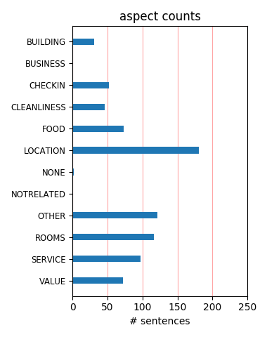
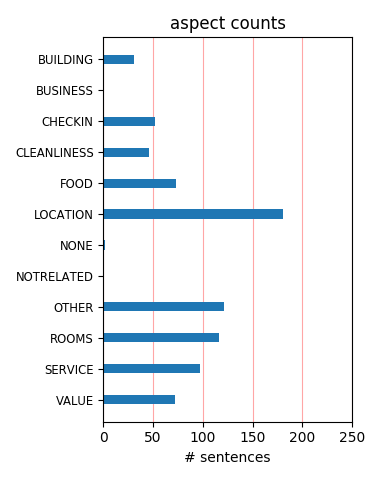

I like the hotel, but you have to ask for a room with a window on the outside, otherwise you will be disapointed. But if you choose the hotel only for sleeping in a very clean and very nice room, you don't need for a window, chhose this hotel !
This hotel may be a little out of the way but it is still close to everything. Our room was amazing, especially for the price. It had a wonderful bar which was appreciated after a hot and busy day sightseeing. Would definitely recommend thi shotle.
Excellent place to stay on a lovely trip to Barcelona. Rate didn't include breakfast and we didn't really speak to the staff so can't comment on this but everything else was excellent. Gusto's by the metro is a great place for a pizza, eat in or out.
Lovely rooms, great location but the staff was a bit unflexible as we had to check out at 12.00h not even 3 minutes later (the hotel hall was empty so no big group waiting for rooms to be cleaned). I wasn't asking for an hour extra but a few minutes to finish packing.
The hotel is very nice and well placed in the center of the city but the triple rooms have no view, are very cleistofobic and the price is very high for such a case.When we booked the room (by web bookiing) there was no indication that triple rooms are only interior ones.
the hotel is very calm, with pleasant jazz background music in the common spaces, excellent accessibility Internet, public transport means to walk, rooms and lobby very fashion and clean, You can reach all points of interest of the City with Metro located at 50 meters from the hotel
This hotel is an excellent value, very clean and modern. Excellent free Wi-Fi throughout the hotel. Breakfast was not great and is probably the only area where the hotel didn't meet or exceed expectations. There are numerous shops and restaurants surrounding the hotel which is very convenient.
you have a separate room for your loggage and clothes. good location for shopping.dont waste time for shoping in the city center. close to the hotel there is a big shopping mall and so you can find many other shop in same street. car parking is not free and there is not any elevator from parking to the hotel
lovely helpful staff and a great breakfast at a reasonable price - a boutique - ish feel , well appointed rooms with huge beds and lovely bathroom. The bar is small and friendly and not intimidating to sit and wait alone in - and the reception staff are very obliging, Clean, freshly done up and classy - recommended
hotel is located in very nice area. Not crowded, but 1 minute from metro station L5 and about 15 minutes from La Rambla street. Very friendly staff, good service, rooms exactly as on pictures. Reasonable price. Breakfast is impressive. Good choice of dishes in nice decorated place. Highly recommended. Free internet access.
We had a wonderful experience at U232. The front desk staff, especially Laia, were great. The room was wonderfully designed, comfortable, and spacious. We were only a block and a half from a metro stop. The only slight concern is that it's not located in the city center, but with the metro so close, it's easy to get around.
Nice hotel for the value. Rooms were over sized for European standards. We had a room on the top floor with a great terrace including table and chairs. Small fitness room but offered if it's on your list of musts. Not sure why you'd place 15 or 20 euro for breakfast when there are great little coffe shops within a block or two.
I only decided to write this review to point out that if you need to iron your clothes, you can't have an iron or ironing board brought to your room. You need to use their ironing service. Hence my 2 star rating for service. Otherwise, the hotel is very stylish, modern and clean. And the staff speak impressive English and are friendly.
Lovely hotel. Staff very helpful. We arrived after midnight and wanted a drink the bar was closed but the receptionist gave us a map and showed us where to go. They also booked a dinner and show for us. The rooms were very very clean and the decor was great, good hairdryer, powerful shower, mirror and lighting good. What more do you need!
We spent two days in Barcelona and wanted a hotel near the hop- hop-off Bus Touristic. The hotel is a short walk from stops for both bus routes and close to the metro, very convenient and very comfortable. It is not in a tourist area and so we got a better price and a nicer room for our money. The hotel helped make our too brief visit a pleasure.
Clean, modern, comfortable. Good location...easy to get on metro and just a couple stops to all tourist areas. Nice staff. Free internet. Great price and value!! Would definitely recommend to all and would stay again myself for sure. Loved it!! This was the first 3 days of a girls trip through Spain with friends, and this was our favorite hotel of the trip.
Everything you want from a hotel stay. The room cannot be faulted, with a spacious terrace, super comfy bed and the best hotel bathroom (two rain-showers and bath) and stylish decor. Our favorite part was the excellent service. No sucking up or insincere 'hospitality' just good old honest professionalism and friendly personalities. Absolutely worth every cent.
Stayed for 2 nights and must say was pleasantly surprised. Large rooms, nice and clean. Nice bathroom with shower and bath and also english speaking staff so checking in and out is easy. For the price, you get a great stay in a convenient place. One train from Sagrada Familia and 2 from beach. 25 minutes walk from La Rambla. Had a great stay and would use them again.
Excellent, stylish hotel, staffed by very friendly and helpful professionals. The rooms are modern and well appointed, with a good sized bathroom. Lots of cafes and restaurants within 5 minutes walking distance of the hotel, and the main city attractions are accessible within 20 minutes walk or via the metro system just a few minutes walk from the hotel. Highly recommended.
We liked this, small, modern hotel very much. The desk staff was great, spoke english well, very helpful with directions and suggestions. Our room was spotless and comfortable,, although it looked out only onto an air shaft (no view, but very quiet). We didn't get the breakfast, but the lobby bar was very nice. Separate room with two free internet terminals and printer was great.
Stayed here for 5 nights and the room is great with two twin beds and two bathrooms, truly a luxury for how much we pay for. One downside is the room has a window facing inside and is dark in the morning that didn't bother us. It is very closed to Metro and great cafe for a quick breakfast. The receptionists are very friendly and knowledgeable. We will come back again and stay here.
Far enough away from the busy centre but conveniently placed by the metro and within easy walking distance of Las Ramblas. All staff were friendly and helpful, particularly Fernanda who was in charge of reception during our visit, and who responded very helpfully to our e mails before our stay. Our room was of a good size and very comfortable. We will happily stay again.. Kevin Hurst
Stayed here last month dor 3 days as I was inBarcelona for a business trip.My room was nice bit dark as it was on th backside therefore it was very quite though.I used some room service reasonaly priced and fast delivery.Reception was the ladies were very kind the guy could was ok. Location is great very close to the metro because of that to all the sites in Barcelona. Would stay again here.
We stayed two nights before and two nights after a Royal Caribbean cruise. Being centrally located it allowed us to walk to many places; public systems within a few blocks. The hotel is relatively small, recently updated with adequately sized rooms (very nice bathroom), efficient personnel. Bar is excellent, Breakfast a bit pricey at 13 Euros but good. A number of small resturants are nearby.
First Impression: verry Nice. We travelled to Barcelona for Vacation. For us as Students a verry nice designed Hotel. The staff was verry helpfull. They try to arrange everything or you of you want. We did not use any meals. Supermarket is arround the Corner. Nice Central location. Metro 1 bloc away, Sagrada 20min walk. Free use of 2 computers in lobby with connection to internet and possibility to Print
We slept one night for business. The hotel has a nice trendy moderne atmosphere that is very cosy ( wood, dark colors on the walls). Room very nice with flat screen, great bedding, free internet ( VPN not compatible) Price was 110€ including breakfast ( fresh orange juice) Minibar filled and not too expensive. Location is maybe not the best, but still in a busy area with good restaurants around Would go back - definitively
I stayed at the U232 for a trip with my friend ,arrived early and got allocated our room straight away.room was lovely with everything you would need,all toiletries and proper hair dryer.we booked for b&b and the breakfast was great .everything you want to set you up for a day of sight seeing.staff were very friendly and spoke good english, and hotel had a nice relaxed and safe atmosphere to it.would definately stay again.
Nice hotel. Comfy beds. Easy access to both metro and buses. Staff at reception very pleasant and helpful. Restaurants, shops, cafes and supermarkets nearby. More Positives Good nights sleep free internet access with a printer for the residents gym on 10th floor with the added bonus of an open air leisure area beside it. Negatives A little out from La Rambla and beach. However a number 59 bus provided quick and easy access.
U232 is in a residential area of Barcelona. There are good cafes nearby for lunch and breakfast & I don't think breakfast is of good value in U232 (14 euros per person). Hotel rooms were good, bathrooms were very nice. No tea & coffee making facility and there is no provision of kettle, etc. Reception staff was brilliant. Hotel is well connected with public transport therefore you can go out late in the night. Would stay again!
Stayed here for 4 nights and really loved it. Check-in went smoothly and personnel is very friendly and helpful. The hotel and rooms look like new; it's very clean and tidy. In the room there are all kinds of bathroom amenities offered. Metro stop Hospital Clinic is only like 100metres away and there are nice places nearby for breakfast or midnight snack (probably also for lunch and dinner, but we were not at/near the hotel during the day).
Good, clean, comfortable hotel away from La Rambla. Only a five minute bus ride into the busy Barcelona city. Close to some really lovely restaurants/ tapas bars etc. Staff were really helpful and friendly. Our room was upgraded so we ended up with a suite which was just what we needed after three weeks travelling by car around Italy and France. Breakfast buffet had a wide selection to suite all the different types of international travellers.
Great hotel room spec - very friendly welcome from staff who are not only helpful but knowledgable about the area and amenities.We stayed for 3 nights in a U232 room with an enormous super king size bed and private terrace. Quiet outlook at the rear of the hotel away from the main road. Breakfast was plentiful and varied catering for most needs. Unable to fault anything about the hotel and the service we received and highly recommend a stay here.
We were looking for a hotel away from the tourist areas but still very accessible to the sites of the city. U232 was perfect for us. The Metro was very close and we were within walking distance to wonderful neighborhoods. The rooms were small but very well appointed and comfortable. The staff was terrific and went out of their way to help us enjoy the stay. Each afternoon we really enjoyed getting a bottle of wine and heading up to the rooftop terrace.
Great hotel , very close to metro or only 10-15 mins walk away to main tourist areas. Rooms were of good quality and very clean. Service was excellent with friendly helpful staff. In business area but did have a few good restaurants nearby with lots of cafes for breakfast. Pleasant bar in hotel for early evening beer. Didn't eat in hotel so can't comment on food. Rooms were quiet so had good nights sleep. Definitely recommend especially when rates were so good.
We stayed at this excellent Hotel for two nights to attend the first U2 360 Concert at Camp Nou. The location was just superb. 15minute taxi to Camp Nou. 2 minute walk for the underground station to expore the city of Barcelona. There is a caferteria just as you go out of the Hotel on the right and a supermarket around the block on the left. I would definetly recommend this hotel to anyone. The staff is nice. The hotel is clean and the location as mentioned above is simply superb.
My boyfriend and I have just returned from u232 after a week's stay. It is a really nice, clean and modern hotel. Rooms are of an excellent size and are of a high standard. The hotel is ideally located for the metro, and is a 20 minute walk away from La Ramblas. It is worth buying a T10 card which allows you 10 trips on the metro and can be shared. The roof terrace is a gorgeous space to read, sunbathe and have drinks with some jazz in the background. I would definitely stay here again!
The U232 was modern, clean, and comfortable, although the rooms were small by American standards. The free Wi-Fi was spotty, and the shower temperature was tempermental. The breakfast buffet was fantastic. Look for special rates that include the breakfast! It's close to the Metro, but nothing else! If you want to go to Placa Catalunya, it is quite a trip. Recommend taking the (cheap!) taxis if you are in a group. We didn't find many places to eat, shop, or sightsee within walking distance.
We have just returned from the lovely U232 hotel in Barcelona after a four day break in this beautiful city.Ideally situated for the major sights and a peaceful haven away from the hustle and bustle of the city.Whilst there we suffered an unfortunate experience while out one evening and the hotel staff, particularly Manuel pesich,went out of their way to help us.Their kindness and understanding is something we will never forget.We would recommend this hotel to anyone and hope to return one day soon.
We stayed here during peak season, and at under 200 quid for 4 nights the price is fantastic for central Barcelona. Anywhere nearer to La Ramblas at that time of year costs an arm and a leg! It's a short walk to the tube station, a couple of stops and you are at La Ramblas. Tubes run til quite late, but after that taxis back to the hotel are reasonable. The room was nice - nice bed, good size bathroom and mini bar restocked every day (drinks not included) . Would definately stay here again next time.
Very pleased with our recent stay. The staff were helpful and courteous (someone had obviously been smoking in our non-smoking room and they quickly arranged for another; we later saw that they were airing out the first room) and the location was safe, centrally located, and near good restaurants. Our room was very quiet, clean, and tastefully decorated with a decent bed/mattress and a terrific bathroom. Very good value. There are plenty of cafes nearby, so that you can skip the 14 Euro buffet breakfast.
This is a wonderful NN hotel which provides great value for the price. We were able to stay in one of the rooms on the top floor which was amazing. There is a large king size bed with a HUGE washroom complete with a jetted tub and two rain showers. The room also has a large patio with a table for dining and lounging. The only downside to this hotel is the location. Although it is still quite central, it is a little bit out of the way. This is easily overlooked though if you can get one of those top rooms.
We grabbed a three day break in Barcelona just before Easter. The hotel was a pleasant surprise - very helpful staff and the rooms were clean and comfortable- would def stay here again. Dont be put off by the distance out of the centre - thats a plus - either grab a cab(Euros8~10 to the center), or take the Metro for aro Euro1.40 for a single trip (its a short walk of about 200m). Good Friday was really busy at all the attractions (as all the shops were closed) good idea to take the tour bus to get your bearings.
Drawbacks: - The location is a bit far fetched; for example, It takes approximately 30-45 minutes to walk from the hotel to Plaza de Catalonia - The noise from the street Urgell. The first night we had a twin room at the second floor with windows out against the noisy street Urgell. However, we were able to change to a quiet double room the following four nights. - Our room was a bit small, however the bathroom was okay Advantages: - Nice interior - Friendly staff - A lot of accessories in the bathroom - Free Internet
I have become a regular visitor to this hotel thanks to its exceptional value for money. The hotel has a modern look to it but with all the warmth of the latin people. The rooms are excellent and there is also plenty of options to hold small/medium sized meetings with clients. Internet is free of charge ! Only negative side is the breakfast, a bit expensive for what you get. Should be improved and certainly increase the variety to offer. Would recommend both for business and leisure, better for couples or small families.
The hotel was a great value. It was well located, a few minutes walk to the diagonal. The hotel rooms were clean, not too small, beds were comfortable, nice bathroom. The hotel was lobby was modern in design. The staff was so friendly and helpful. The staff added to the entire great experience we had staying at the hotel. Parking is conveniently located next to the hotel, and the hotel offers a discount on the parking fees. Many nice options for all dining experiences within easy walking distance. I would stay here again.
After LONG flights from Seattle ~ we were immediately soothed by the friendly and helpful staff allowing us to store our luggage in a secure room so that we could get out for a walk-about to shake off our jet lag. We found every amenity to be 'spot-on' and the location just perfect for us. We enjoyed the buzzing activity from our balcony but our friends said their room facing the back was very quiet compared to ours. I wouldn't hesitate to stay with them again and recommend them to friends wanting an intimate, friendly hotel.
I just spent another few days in BCN and stayed (for the 3rd time) in U232. The hotel is amazing! Very cosy and elegant. Very nice lobby bar and friendly staff. One of the hotels I want to go back and back again. Just feeling on the right place there. Room 711 features a great balcony/terrace with city views. The location of the hotel is one of the best about it - situated just 5 minutes from Via Diagonal and 15 minutes walk from pl. Catalunya or 5 minutes by taxi. Just take a look on the hotel website and You'll get an idea!
i stayed here for just one night to see FC Barcelona with my 6 yr old son. The hotel is a short walk to the metro stop, by short i mean less than a minute !! Staff here (2 ladies on the daytime shift) were absolutely superb and so helpful. The room was nice and there is an excellent toiletries/ grooming kit provided so you need nothing - not even a toothbrush !! The only negative point i can say is that i had a room facing inward so there was little natural light. Beds were soft and comfy - overall a very pleasant stay for less that £65 !!
Recently renovated hotel. Well done. Good reception, atmosphere. Excellent, very friendly and helpful staff. Good breakfast. Overall very positive impression. We had a triple room. Unfortunately the triple rooms face an internal courtyard which is covered. So no fresh air circulation. With all our systems off, we at one moment had an internal room temperature of 29 degrees. So, in the midst of winter, we switched on the Airco. Call me a complainer, but I do not like sleeping with Airco either. So, if you like to sleep in a warm room, do go there.
I took my husband here for a surprise trip for his 30th birthday. The rooms were a really good size, they were stylishly decorated with excellent showers and really comfortably beds. It felt like the place had only recently been refurbished but I don't think it had. The staff were very friendly and extremely helpful, recommending some excellent places to eat and visit. The only slight negative would be that this is about a half hour walk from a lot of the central touristy places but to be honest that was a bonus for us as it was nice and quiet in the evenings.
My wife and I stayed here for 3 nights in September. This hotel is less expensive than most since its in a quiter part of the city. Although its only a 10-20 min walk to most sites. The staff is helpful and the rooms are clean. The bathroom was excellent and appears to have been recently renovated. There is free WIFI. We didn't pay extra for the breakfast but there are plenty of places to eat in the area. Overall we would recommend saving your money by staying at the U232 rather than pay extra just to be a liitle closer to the city center (Barcelona is an easy city to walk around).
We stayed at this hotel on our trip to Barcelona for our 1st anniversary. Small but stylish room with a balcony and the hotel was only a block or so from the metro. And everything we did was within 4 metro stops so while not located in the city center the hotel is definitely in a great spot. The neighborhood was wonderful -- there were cafes, bars and excellent restaurants all within walking distance. The staff was nice and generally helpful but they did forget to give us our wake-up call on the day we left. That was the only negative of the hotel. I would definitely stay there and recommend it to others.
We stayed at the U232 in Barcelona June 1-3, 2011 and had a great experience. We arrived very early in the morning, hours before check in, but the friendly and helpful staff stored our luggage for us, gave us the wireless code, and a comfortable place to sit and relax. By the time we'd had a cup of coffee and checked our email, our (spacious) room was ready. If I was forced to find one fault, it would be that something they used in the hotel (an air freshener or cleaner?) was a bit overpowering. It was located in a nice area with easy access to anything you would want. I would gladly recommend this hotel.
Pretty good location, just slightly out of the centre. Which, actually is quite handy as a lot of Barcelonas tourist locations are spread out to all parts of the city and this hotel has a metro stop pretty near by. I've stayed here on more than a few occasions now and have always taken the 'top rooms' (as they are referred to by the hotel). They have beautiful terraces and the most amazing enormous 'roman style' marble baths. (absolutely perfect for romance etc...). Apart from these rooms, the hotel is typical of Barcelona. Breakfast is NOT included, despite the exorbitant price and the service is adequate.
My boyfriend and I stayed in this hotel 5 nights and we really had a pleasant time! The hotel itself looks really nice and comfortable. The room was really nice decorated, but maybe a little bit too dark for my taste. The bathroom has a little rain shower and provide you with all the amenities you need. The staff was friendly and helpfull. The bar is nice, but really expensive. The location was good too. In walking distance are a lot of restaurants, bars and clubs. The subway - which will bring you to the centre, the harbor etc. - is a 2 minute walk from the hotel. A cab ride to the airport will cost you about € 40,-.
I stayed in this hotel for 6 night at the beginning of august, one day i did find a bed bug crawling in between the 2 single beds... i didnt know what it was at the time, when i came back home i woke up with at least 100 bites all over my body... i went to the hopsital and the doctor told me that i have been beaten by bed bugs.... i had to stay at the hospital for some injection... and i am totally traumatised..... so obviously i will never go back to this hotel. I have just called the hotel and they just told me "thanks for acalling" thats it.... i am sorry but this is not enough..... i am very upset and disapointed....
We stayed here for 2 nights on a recent holiday. The hotel staff were helpful and efficient. The hotel lobby is warm and cosy. Our room had a balcony and was of a good size. The decor was of good quality and the room and bathroom were very clean. The location of the hotel is approximately 30 minutes walk to La Rambla, however, there is a metro stop only 2 minutes away. There are numerous shops and businesses in the area. The area is quiet at night, so you will need to travel to more lively areas to find a nice bar or restaurant. Free wifi is available also. Overall, a great stay and excellent value. I would stay again definitely.
We enjoyed the peace and quiet of this hotel. Free internet/computer in their small business center. Requested and received very quiet room facing back. No view, but, more importantly, no noise. Attractive, very clean, smart looking. Hotel stored our luggage for a day before we officially checked-in. Located a bit too far from Las Ramblas to make the walk all of the time, but metro is a block away; most often it required a connection to our destination. About 1.5 blocks to food market, smaller version of La Boqueria. Definitely recommend if you don't mind being a tad away from the hustle and bustle of Las Ramblas. For us, that was a plus.
we stayed at this hotel for 2 nights if you want a room away from the road then ask to be on the back of the hotel very very quiet ,very helpful and speedy at reception, a 5 min walk from the metro station and a 15 min walk from the aerobus which costs about 5euros each to and from the airport or 25 to 30 euros in a taxi, we didnt eat at the hotel for breakfast turn right outside the hotel and 2 doors away is pans (a bit like subway) they sell bagettes for 3.50 euros and you can sit outside in the sun, we didnt walk to las ramblas but i should think its quite a distance on foot ,well situated for the metro to fc barcelona ,would definatly stay again
We stayed here for three nights and the only criticism we can think off is that the location means that to do anything in town you need to take metro (only 2 minutes walk away) or taxi. Before leaving we read up on the immediate area and it sounded lively and full of bars. It has some life but as much we expected (this for many could be a positive aspect). On to the hotel itself. Modern design, bit dark but stylish. Our room was excellent, huge bed, plenty of space and a good bathroom, nicely designed with view from bathroom to bedroom. Breakfasts were great and all the staff helpful and willing. Would recommend U232 with only the warning about the location.
U232 is classy, clean, and centrally located. It is very stylish, yet completely affordable. The room I was in might have been TOO comfortable. The beds were amazing and every day I woke up to the sun shining in through the door to our balcony, which overlooked the beautiful tree-lined street. The staff is very nice and friendly, and the little bar is a nice touch. My friend and I would grab a drink and olives at the hotel before heading out at night. There are plenty of cafes and restaurants nearby, and you can walk to some of the main attractions in Barcelona. Additionally, the metro is about a two minute walk from the hotel. I would definitely stay here again.
Arrived @ 11 am, and was able to check in straight away. Staff friendly and polite. Our room was on the 10th floor and just as we had imagined it would be, clean, modern and very spacious. Bathrooms nice only down side was that one of the showers did not work and the one that did was slow. One big down side for me was that we were unable to have the use of an iron in the room as the hotel only offer an ironing service. Hotel location only one block away and very easy to use! We had a T10 ticket and this lasted for three days for two of us and the cost was under 9 Euro. I would recommend this hotel as all in all we really enjoyed having it as a base for our city trip.
This really is an excellent hotel. Well run, with efficient staff. Quiet rooms in back, nice breakfast room. However, the location is quite far from Gothic Quarter and major sites, and the tour bus does not stop near here. There is metro line 1.5 blocks away, but it does not go anywhere you would want to go, and you have to transfer, with long walks between lines. It is about 6 long blocks to other more convenient metro- and if it is hot in summer, you will not have pleasant walk. For solo travellers, consider a better location, especially for returning at night. The neighborhood itself is pleasant and has many restaurants, but you will not have convenient access to touring.
I loved the 232. A very stylish, boutique hotel without the stylish boutique hotel prices! We paid around £70 bed and breakfast per night. The hotel is in the Eixample area of the city, a bit quieter than the hussle and bussle of the tourist area but still only 20 minutes walk from the Ramblas or 2 minutes on the metro which is only 2 minutes walk from the hotel (Hospital Clinic station). The hotel provides great breakfast (cooked and continental), a great gym and a superb roof terrace. There's a bar on the ground floor serving drinks and snacks. There's a good selection of local bars and restaurants in the surrounding area. The staff are friendly, the decor is wonderful. I'll stay here again.
We reserved two rooms because we were traveling with our college aged children. The wifi connection was great so our kids were fully entertained. We reserved one of the hotel's "top" rooms which had a shower which didn't work properly. The hotel could not get it fixed over the Easter weekend and moved us to a beautiful room with a good view and plenty of room. The staff was helpful, and the hotel has an attractive bar area for grabbing a drink before or after dinner. Very good restaurants in the area, including 2 by a restaurant owner with a last name of "Olive." The staff will be able to direct you. It was so crowded in city center that being a metro ride away was a pleasure. Would return to the hotel.
We went to Barcelona for a weekend and chose the U232 as it was not too expensive but still in a nice area. The hotel is 5 minutes walk fom the metro (Hospital Clinic) and you can be in the heart of Barcelona in less than 10 minutes. The room was clean and stylish, it was a good size with a huge and suprisingly comfortable double bed. We didn't have breakfast in the hotel as it was an extra €14 each per day. There are a couple of cafes towards the metro stop and we got good breakfasts for less that for both of us. The only other negative thing was that the bathroom towels were really hard, not just a bit short of fabric softener but like nearly doormat level. Still, the staff were pleasant and we left quite happy. I would go back.
We loved u232. From the very start till we left the staff could not have been more polite and helpful. The welcome drink was our best cocktail in Spain in their very chic little bar. The rooms were so comfortable, the breakfast was tasty and fresh, and the location was brilliant if you don't mind using the metro. We did walk to the wharf on the first day but after that used the nearby subway for easy access to everything Barcelona. We loved our dinner at local pizza restaurant and went to a tourist flamenco performance which was good fun and not too expensive for the show and a simple meal for 25€. Best was wandering the streets and being gobsmacked by the incredible buildings. Of courseLa Segrada Familia was mind blowing and well worth the entry fee.
We stayed for one night as apart of a stop over in Barcelona. Its about a 20min walk from the city centre but very near to the Hospital metro station from which is fast to get anywhere. We parked in the public carpark under the hotel that was about EUR 20 for 24 hours after a hotel discount. The hotel is quite modern and well decorated in dark wood. Our room was a standard one but was well decorated a of a good size and had a nice bathroom. Everything was very clean. We did not have breakfast as our rate did not include it and it was quite expensive but there are a number of local cafes and coffee shops so getting breakfast and lunch was no problem. The area felt safe. I would be happy to stay again on my next visit. It was a very peaceful experience compared to the crowded city.
Just stayed here with my husband for two nights and were so glad we chose the U232. We went for the "top room" which cost half as much as a standard room in many hotels off La Rambla. Location turned out to be good, actually, if you don't mind hopping on the Metro--only a block from the Hospital-Clinic Metro stop, which is just a few stops from the train station and also the Segrada Familia. The room (908) was absolutely fantastic. We loved the huge private balcony on a corner, with 180 degree views over the city. The bathroom was very spacious with a shower I would love to have in my house--two shower extensions, plus a rain shower. The hotel was stylish and very clean, with helpful staff, a business center with free internet access and a printer. Oh--and breakfast was really good as well...great coffee.
I stayed for 8 nights at this hotel in April 2011. My stay here was fantastic. I loved the staff, loved the ample size of the room and loved that I was far enough away from the downtown that I had to walk 30 minutes to get anywhere (although this might not be for everyone). The staff spoke English very well and seemed to either want to speak English or Catalan as they were very proud of their Catalan heritage. The staff were also very eager to help one out to find a nice restaurant and I took them up on their offer on more than one occasion. There were 2 slight downsides: a) the room pointed at nothing, but hey! I don't stay in a different city for a perfect landscape view b) Breakfast was way too expensive, and so I didn't pay for it. Next time I stay in Barcelona I would come back to this hotel as I really enjoyed my stay here.
Just returned from a 3 night stay at the U232 and it was wonderful, nothing to fault at all. The hotel is exactly as the website photos show. The lobby area is lovely and relaxing, especially with the ambient music playing. The decor is very clean cut and contemporary and the hotel was only refurbished last year so still has that new smell about it! The staff are very helpful and friendly. The rooms are spacious, spotless and you're guaranteed a good nights sleep in the huge comfy beds. Great location and close to the metro station. Check out an amazing tapas bar in walking distance called Cerveseria Catalonia for the best tapas in town. We had 3 glasses of red wine, 5 beers and all the tapas we could fit into 2.5 hours which cost around 50 euros, a bargain for the quality of the food. An excellent hotel, I would definitley go back.
I would stay here again. It is in a great location for a great price and very clean. The staff is friendly and helpful. There is free wifi. The bar is nice, and on the second floor there is a cute lounge area as well. Yes, the furniture is somewhat cheap, but modern decor at an affordable price is going to mean cheap Ikea-style furniture. The only real downsides were that the shower and sink were very slow to drain and the shower head was so strange it was hard to actually get the water on your body instead of hitting the front wall of the shower. Otherwise, this was a great hotel. There is a nice closet and ample drawer space, and also a desk and side chair. It's not a big room, but if you're in Barcelona staying in your room then you should go home anyway! If you stay here, you MUST go to Maitea for tapas! It's only two blocks away and AWESOME!
When traveling to Barcelona, we were expecting a pint sized hotel room because thats what you typically experience throughout Europe. When we arrived at U232 we are pleasantly surprised and the size, decor and cleanliness of the room. Had a large King Bed, large bathroom with all the amenities, Ikea-esque decor, flat panel television and tons of storage for baggage. To top it off they have a free business center with computers and printers. The staff was also extremely helpful, they spoke english (which is pretty hard to find in Barcelona) so they made numerous phone calls for us (ordered us pizza, called the post office for shipping, etc). It was close enough to the shopping line and Las Ramblas to walk and had a great little cafe kitty-corner from it for coffee or pastries. We loved this place and would definitely stay again if we went back to Barcelona!!
A very positive experience. The hotel offered a very good rate for a fully cancellable booking - under €85/night. We arrived early in the morning, but the hotel let us have our rooms immediately - greatly appreciated after an overnight flight. Desk staff were friendly and helpful, the rooms are stylish and comfortable. (Smallish by American standards, but just fine actually) Wifi Internet is free, and there is a computer center for printing boarding passes and the like. The location is slightly off the beaten path (in Eixample about a 20 minute walk from the Passeig de Gracia) but take advantage of that and view the beautiful Beaux Arts architecture in the neighborhood. It's also nice to have some distance from the Rambla. I did not eat breakfast at the hotel (there are inexpensive cafes right on the corner) and there is no gym. I would happily stay here again.
The hotel isnt in the heart of the main touristy areas, but in a nice quiet part of Barcelona - within walking distance of everything - an easy 5-10 minute walk to the main road where the "hop-on" tours stops and a short distance from bus # 59. The decor is contemporary with dark colors, cocktail bar in the front entrance. Easy jazz music playing softly throughout. Super fast free internet with a printer. Rooms were very modern. The place was immaculately clean. The staff were very pleasant, extremely friendly and obliging, helpful with directions, recommendations and other needs. Multilingual so I did not have to embarrass myself trying to speak Spanish. Restaurants, shops, cafes and supermarkets all nearby. From the service, to the room to the location, I could not fault the U232. I would not hesitate to recommend this hotel and would definitely stay there again.
This is a boutique style hotel in Barcelona , close to the Metro which gets you downtown in 10 to 15 minutes. The reception staff were very helpful and friendly. The rooms are beautifully decorated in a modern chic style , including flat screen T.V , MiniBar and Air Conditioning. Our teenagers had a twin room which had 2 beds and a seperate sofa and still ample room for luggage , they also found the free wifi a bonus. Our own room had a huge king size bed and a luxurious bathroom which included one of the best showers we have ever seen.The bar area is also in a chic style , with good service , the only downside to our stay was probably the inflated price of the drinks in the bar, which probably accounted for the lack of people using it which resulted in a lack of atmosphere ; the management would be well advised to drop drink prices and encourage more customers and create a Buzz !
Booked U232 Hotel as part of an Expedia air/hotel package not knowing what the hotel would be like. Had read the reviews which sounded good. Without reservation I can now highly recommend the U232. We had 3 rooms on the 2nd floor. Each room had a different layout but each one was finely appointed, exceptionally clean, with great storage for your bags, free wi fi, and one of the best bathrooms of all the hotels we stayed in over 14 days. The front staff were always extra friendly and helpful in recommending restaurants or places to visit. Bedding was comfortable as well. The hotel is located in an upscale neighborhood and within a very short walk of the nearest metro station. Rooms were quiet even from the hospital nearby never disturbing us with loud ambulance sirens or street noise. From our balcony we could view the nice college campus across the street. Would certainly stay here again.
We booked a "Top" room at the U232 (as part of a trip celebrating our wedding anniversary) based on the photos displayed on the hotel website. We expected our room to have a shaded terrace with cushioned chaise lounges as displayed in the advertising for this type of room. While we were given a room on the upper floor, our terrace was open to the elements and was furnished with two canvas deck chairs and did not even offer an umbrella for shade. The temperature was in the 85 - 90 degree range and the terrace was so hot we could not use it at all. We asked to be relocated but were told it was not possible. The hotel staff were very friendly and helpful, the location was quiet yet accessible to all tourist sites and the metro, and the breakfast was very nice. However we were very disappointed that our TOP room was not what was advertised and not what we expected despite paying the higher rate.
When searching hotels for a two night weekend stay (ex cruise) we did not feel the prices in the city center (Rambles area) represented value in any form when averaged at £200 per night (double). This location -only a short walk to the Metro station - with a choice of at least three breakfast eateries on the way with endless selections to eat for a few euros - getting into the centre in 15 minutes meant we saved a small fortune. Our room was a good size with large bathroom and all cons necessary. A very comfortable bed and all very clean & I am quiet particular in this area! Any questions at the desk were politely & informatively answered with a smile and maps to help on our first visit to the city. All in all apart from the breakfast cost which we declined as not value which was a good decision as explained above - we feel this hotel deserves the acclaims given by fellow travelers reporting on this site.
We were a bit worried about the distance of this hotel from the main tourist areas, but this turned out to be a blessing as we really enjoyed the neighborhood and the hotel itself was top-notch. Our room was on the 2nd floor and faced the back so we didn't have a view - but we did get an extra big balcony. Curiously, there was no patio furniture, so there was no way to really enjoy it other than lean out. This is a very design-y hotel with really nice furniture by Zanotta, Artemide, etc. There's a bar downstairs and a breakfast restaurant (though we opted for neighborhood cafe's instead). If you are taking the metro from the airport, the light blue line actually takes you to the nearest stop (Hospital Clinic). This same line takes you directly to the Sagrada Familia. All other sites are 2-3 transfers away. Friendly staff and great amenities as well (love the heated towel rack and box of personal grooming kit you get upon check-in.)
U232 offered better service than most 5* hotels we stayed. Everything was just right for us. - Friendly, always helpful staff that speaks English - Very accommodating when we switched rooms because of the street noise. (Barcelona - - was very noisy because of the soccer world cup celebrations.) - Breakfast was very nice, with something for everybody - The entrance and the rooms are beautifully decorated and very clean - Free PCs with fast and reliable internet connection, which we didn't have in any other hotel in Spain. - Parking is available right next door I don’t think that Barcelona has another hotel that offers that much value for its price. We payed 90 Euro with a great breakfast and welcoming drinks. The location didn’t seem that great in the beginning, but we realized that by taking the bus instead of the subway (2 bus lines are just 2 minutes away and those buses covered all our needs) it was easy and cheap to get around.
Thanks to this hotel and it's location we were able to spend time away from the crowded tourist traps and experience real Barcelona: warm and cosy restaurants, locals watching football at their neighbourhood bars etc. However, the hotel is not actually that far away from the sights, Barcelona's excellent and cheap metro system will take you anywhere in the city and the Hospital Clinic station is located only 5 minutes walk from the hotel. The hotel is decorated with unique, modern style inside out the hotel. The reception staff was friendly and we got some excellent restaurant tips as well as instructions how to reach different sites. The free wireless network is available everywhere in the hotel, but the idle time is set very short and you may need to reconnect quite often. Perhaps the only minus for this hotel experience was the breakfast. Even though the basic selection was adequote, the quality of food was not consistent. Warm dishes at the buffet were not warm enough and the local tomato sauce for bread should be available all the time.
We recently stayed in this hotel in Barcelona, based on the Tripadvisor reviews we thought it would be fantastic and i have to admit we were very dissappointed. The staff we found were quite cold and non welcoming. In terms of the hotel, yes it is a business hotel and therefore lacked in terms of facilities if your trip is for leisure, there is no area to relax in the sun or terrace area, even the balconies didn't have chairs. Beware also breakfast is €27 for two people and a whiskey and coke at the bar €12, so this hotel is very over priced. Down the street we found a little cafe where a beer was €1.90 to put things in context. Oh and the bar shuts at 11pm - even for residents The hotel is a good 25 minute walk into Las Ramblas although the metro is fantastic if you don't mind getting two trains, however if you want to be in the centre of things, this hotel is far. On the positive side the beds were very comfortable and the hotel is quiet. wish we had more good things to say as we usually book on the advice from tripadvisor, but not this time
We stayed here for the second half of a 10 day trip to Lisbon-Barcelona last Autumn. The weather was great and so was U232! Although our particular room was a bit small, with no view to speak of, the beds were very comfortable, the air conditioning was good and the bathroom very clean and modern. The front desk staff were lively, comical and very helpful, and the female bartender made hefty drinks.The location is great, a block from the Metro, in a nice neighborhood, and you could be in the Ramblas in 20 minutes walking. We walked to la Sagrada Familia, etc. and there are nice restaurants in the area of the hotel, there was one 'inoteca that is a wine store in the front and a large restaurant in the back with very tasty food. Ask them at the front desk about it. If you're there for several days, don't miss the chance to go to the picturesque nearby seaside town of Sitges, only an inexpensive 30 minute train ride from the Central Railway Station. When in the Ramblas, don't miss the Plaza Garibaldi, a very beautiful palm lined courtyard and fountain which is great for taking photos.
I booked this hotel for both a before and after cruise stay for a group of older adults and paid the sizable 20% non-refundable deposit. I did read the location statement on the company website which states that it is in a quiet residential neighborhood home to some of Gaudí’s most famous works”. After adding a former stroke victim to my group, I decided to do some more research. I did a google street view of the hotel address and found the area did not look residential at all. Further research indicated that to get to Barcelona City Center was more than most older adults in my group could handle. It involved walking 100 meters (more than three football fields) to the subway and a two subway ride (1 transfer). By now I was skeptical about the safety of the walk to the subway and decided to move my large group to a sister-hotel of this company. I knew I was in for complaints from my group about the location of this hotel. Hotel U232 not only would not transfer my deposit to their sister hotel, but when I wrote them and requested a refund, they responded by billing me for 4 euro cents.
We stayed for 5 nights taking into account the Spanish workers strike last month and had a great time there. U232 is a great little boutique hotel with excellent service and the quality of furnishings and detail is extremely good for the price. If you're looking for a more personal service than the larger chains in the city, then this hotel is defintely worth a look. I'd advise to ask in advance to get a room overlooking the comte d'urgell rather than the dark courtyard. Guests ranged from business types to affluent Americans, so peace and quiet is pretty much guaranteed. Location is absolutely fine as its only a 20 min stroll to Las Ramblas - and who'd want to be too close to the equivalent of Leicester Square anyway?! The Eixample district is clearly affluent with many cafes, bars and restaurants nearby so take a good look around. All the staff are very helpful and speak excellent English if your Spanish is a bit ropey. The only thing it lacked was an iPod docking station in the rooms, nothing more. If you want a quality hotel in Barcelona, but don't want to break the bank then book into U232. Highly recommended.
We stayed at the U232 prior to a Mediterranean Cruise. We spent two nights in the hotel. It was extremely clean and the staff was very helpful. We were greated by Manuel and he made must feel very welcome. The staff that we came in contact with spoke very good English. The room was very nice and the bed was very comfortable. We felt that it was good value for your money. If you are a traveller from North America, I would recommend that you pack a couple of facecloths because they are not available in many European hotels - that is the case in this hotel. We did not find any really good restaurants in the immediate area but just around the corner there is a grocery store where you can pick up a lot of snack foods at a reasonable price. We returned to the hotel for one night prior to our return flight to Canada and had another nice room. It faced the main street so it was not quite as quiet as our first room that faced a courtyard. both rooms were a nice size and bright. Ferran was very helpful in assisting us to confirm our flights home when we were not able to access the sites on the computer. All in all, we were very pleased with the personnel and the rooms.
We stayed at Hotel U232 for three nights in July. I had been a little concerned about the hotel being located away from many of the tourist sites but the hotel’s close proximity to the Hospital Clinic Metro stop really makes it a non-issue. We checked in very late in the evening as our train from Pamplona did not arrive until close to 10pm. The gentleman at reception gave us a few restaurant recommendations for restos close to the hotel (there are many). The one thing I appreciated the most from check-in was being told how to get in contact with the front desk (dial 55). At both of our hotels in Madrid and Pamplona, no instructions were given for dialing the front desk and it was difficult trying to figure it out. The room décor was everything it appeared to be online. The bathroom had a little wear and tear but there was ample room for toiletries around the sink. Unfortunately, we were not able to access the free wifi from our room (#405). There is a business center downstairs with two computers and one printer, which would come in handy if you wanted to print out your boarding passes. I would not hesitate to recommend Hotel U232 to friends and I would absolutely stay here again.
We love this hotel! When we were deciding where to stay, we thought U232 might be a bit too far away from everything we wanted to see (we are very active sight seers!!!). Don't let this be a factor because the hotel is in a perfect location! It's in a quiet area, but with very easy access to all parts of town due to close proximity to the subway (very safe). My husband and I stayed here for 2 nights after ending a 12 day cruise. Our first visit to Barcelona. Friends had stayed here and they highly recommended it. We are so happy we listened to them! Our room (#908) was large, very modern, clean and just lovely. Great air conditioning system. The large bathroom was done in beautiful black marble, and had a huge tub next to windows that opened onto a very large private balcony (of course, you could also access the balcony from the sliding glass window in the bedroom!). The staff was outstanding! Very helpful in explaining how to get to places and tips on what to do and best times to do it. And they helped us get the 3:00 a.m. taxi ride to the airport! Good computers/printers downstairs that guests may use for free. We will be going back to Barcelona, and will again stay at Hotel U232.
This was our first trip to Barcelona and the last leg of our Europe trip. My husband and I didn't have a large budget so we opted to stay outside of the main tourist area in order to get a better rate for our 4 night stay. This hotel is what I would say on the edge of the tourist area but still definitely in walking distance to all of the sightseeing. It is located about a 10 min walk to the main areas and about a 15-20 min walk down to Las Ramblas, etc. We even walked down to the beach, which wasn't bad at all! But we like to travel by foot to take in the culture. :) To get here we took the train and metro and it was very very easy and inexpensive. To leave we opted for the taxi service because our flight was at 6am. Both great options for to and from the airport. The front desk is very helpful and there 24/7. The rooms and lobby are very clean and modernly updated. The halls are very quiet, which is great for long days of being out and about. The hotel is very safe and there were absolutely no signs of theft. Our room itself was HUGE - king bed, couch, desk, big dressing area, huge bathroom. It was great for the last part of our trip! I would definitely recommend this hotel if you are look for a dependable less expensive place to stay.
We stayed at U232 for four nights. It was our first time in Barcelona and we enjoyed our stay at U232. Here are some pros and cons: Pros: - Very good value - Close to the metro (approx 5 mins walk) - Travel times via metro to the centre are approx. 15 - 20 minutes depending on where you go. Metros go every 2.5 minutes or so. - Good sized rooms (we stayed on the 6th floor overlooking the court yard in a U232 room) - Clean, modern and very quiet. - Very helpful staff - Free WIFI - Late checkout (noon) - Close to Maitea Taberna (good value and quality tapas) - Supermarket and ATM around the corner. Cons: - No iron & iron board. There are laundry facilities available but at high prices. Approx 8 Euros for washing and ironing a single shirt. We ended up buying a travel iron at Carrefour. - No clock in the room. No big deal when you are on holidays but somewhat surprising. - Relatively expensive breakfast. Better value breakfast options are available across and down the road. - The bathroom is separated from the bedroom by a double glass window. Inside the double glass appear to be some blinds which can be electronically adjusted. However this did not work for us. Not a big deal for us, but we found it surprising that it could not be manually adjusted. All in all we really enjoyed our stay at U232 and would recommend this hotel.
Hotel U232 just rocks! I was recommended to stay at U233 by none other than fellow Tripadvisor travelers (of course - who else do you actually trust with great travel suggestions?). After having read the rave reviews, I made my reservation through Wonderlandhotels - which in itself was an absolute pleasure to deal with - one of their representatives, Ali was fantastic, and could not have been more helpful. U232 is so centrally situated and within convenient walking distances from all major attractions. The Hotel itself is spotless, and very swish. Great interior design - and everything worked! The rooms were a pleasure - and the housekeeper staff were excellent and thoroughly impressed me. The little touches added to one's comfort and just made the experience that much more pleasurable. I must make special mention of the wonderful front desk assistance we received. No request was too much trouble. In particular, I must single out Mr Sebastian Elorza who really was fantastic in giving us general touristy kind of trips, and in particular, his recommendations as to which restaurants to visit. Two of them, namely el Pintor and Paco Meralgo hit the nail right on the head - and were really great gastronomic experiences . To Sebastian, all staff, and management, a HUGE thumbs up - you guys are doing a fabulous job. Many thanks, Dirk, 17 on Loader Guest House, Cape Town.
i have just return from a 4 days trip to Barcelona and i was looking forward to write this review. I booked this hotel based on the reviews i have read and because it wasn't in the center of the city near to touristic areas and to be honest the hotel was the best choice of this trip. It is in a quiet area, near the metro station, a few good restaurants and bars are in the area where you can find only spanish people and not tourists. The staff can make you any resrvation for a restaurant or help you accordingly. The first impression when i arrived it was a cosy entrance and friendly staff (well done Manuel) the room was OK for single use (comfortable bed and pillows - clean - mini bar - big flat TV) and it was really quiet even it was near the elevator. The bathroom was clean and it had everything you may needed (the only thing missing in order to make it perfect was a pair of slippers), the shower was big and in marble. The breakfast was excellent, fresh fruits, a lot of choices and traditional mediterranean breakfast. The staff was also very helpful and kind. In the hotel there is free wi-fi connection so you can be online most of the time. if you decided to book a room there, note that you can negociate for the price. I made the reservation on November and when i contacted them by email, they gave me -10% on the internet rate + -10% for early booking. Certainly i return back in U232 for a 2nd visit!
I really enjoyed staying in the U232 hotel. It was modern and cean. The staff were very helpful and the rooms were a good size and nicely decorated with black beams on the ceiling and a well equipped black marble bathroom (once you work out how to use the shower controls - one for water and one for temperature, not hot and cold like I first thought - but that could just be me being useless). I have stayed in Barcelona many times in the past and normally stayed down near the port or the Ramblas however this hotel was slightly out of the 'tourist' centre which I really enjoyed. There are some really nice bars and restaurants near by (my favourite was Maitea Taberna, it is a must if you are staying in this hotel, only 2 minutes walk and great food. Read the reviews on this site). Although I did walk to the Ramblas from the hotel one day I would probably recomend the metro if you want to get about without blisters. There is a stop only one minutes walk from the hotel (called Hospital Clinic) which will give you quick access to the whole city. Travel Tip: I would definitely recommend getting a T-10 ticket for the metro, it saves you a lot of money and makes travel so easy. As the name would suggest you get ten trips on bus or metro and can be used by more than one person (just leave it on the top of the barrier for your friend to use behind you). Every time you use the ticket it tells you on the display how many trips you still have left...
U232 doesn't look like much from the outside, but the unassuming exterior belies an absolutely polished, well-kept interior. We had a room with a small balcony onto the main street (Comte Urgell), but the glass door was remarkably soundproof. That combined with the blackout curtains made for very restful sleep. The room was very, very small, but tastefully appointed and didn't actually feel very cramped. The only thing that was a little strange was the shower. All black marble, which is very nice, but there's no light inside the shower, and there is this funny little window that opens into nothingness (an alternate universe? the twilight zone? some kind of ventilation shaft?). It would be nice if there was a bit more light in the shower, but other than that, a very nice (but tiny) bathroom. This hotel could be improved by offering a free breakfast. We decided to not pay the ~14 euro each day for the breakfast buffet, which looked decent, but not remarkable. Other hotels of this standard that we've stayed out throughout europe offer rooms for a similar price, but include breakfast. This seems like an easy thing U232 could do to improve its attractiveness to all travelers. Finally, it's in a great neighbourhood- slightly out of the main downtown bustle, but with LOTS of amazing restaurant options nearby (though look those up in a guidebook - the ones the front desk suggested were rather underwhelming - the ones suggested in the Time Out guide were especially great).
Arrived at the hotel after just being robbed in Barcelona. Was about 2 minutes away by car when I got a flat tyre at a traffic light. When changing the tyre, somone stole my wife's handbag and made off as a pillion passenger on a scooter (someone who was pretending to help). Later found that this is a common scam, an organised group slashes your tyre and waits for you to stop. Then someone else diverts your attention (the guy on the scooter) while someone else steals your bags etc. Anyway, on to the U232 Hotel.... On checkin, the guy was sympathetic and immediately said he would upgrade my room. Got a fantastic room on the 9th floor with a huge balcony with dining table and sofa. Bathroom had a huge marble bath around 6 feet long with patio doors which opened directly to the balcony. Bedroom was absolute luxury and after the ordeal when we arrived, we felt like staying in the hotel room all night but decided to venture out regardless. At reception, we were given vouchers for a free coctail at the bar. The hotel itself was very luxurious, very well presented. The public toilet was spotless with fresh linen for drying your hands. Also had an internet room with free access on 2 PC's. We didn't eat in the hotel but did notice prices were reasonable for a city location. Basically, the hotel staff and the hoitel ambience made up for what could have been a disasterous trip to Barcelona. p.s. I did get my wifes bag back after I chased after the culprit and pulled him off the bike...
My wife and I stayed at the U232 for 5 nights while we were on holiday in Spain. Location - The hotel is located on the western perimeter of the Eixample district, very close to the Diagonal (a street that runs diagonally through Barcelona). The location, though not in the main tourist area, served us quite well during. The "Hospital Clinic" metro stop is about 100 meters from the hotel, so when we didn't want to walk somewhere, we were able to get around very easily. It wasn't always easy to find good restaurants in the area, however, so we ate elsewhere in the city on a couple of occasions. Room - Our room was very clean and a reasonable size. We certainly didn't feel that it was too small for our five-night stay. There was also ample room to put away our clothes for the duration of our stay. The washroom was nice despite a small amount of water vapor damage that was visible on the ceiling (I don't know why they don't use bathroom fans in Spain, but that would likely take care of the issue). The shower head produced an absolutely amazing "rainfall" shower. I had some trouble with the AC controls, it seemed that the choice was either on or off. Our room was in the back of the hotel and was very quiet. Service - The service from the hotel staff was good. They always had time to answer our questions or make recommendations. The hotel also provides its guests with free high-speed internet. Overall, we'd recommend the U232. We had booked this hotel well in advance and got a good early-booking rate for our room. Any rate you can get under 130 euros per night (breakfast not included) during the peak tourist season should be considered a bargain.
The U232 is a lovely, clean and convenient hotel. My wife and I would certainly stay there again. The staff was friendly and helpful. Georgina was especially awesome. She always greeted us with a smile and her English was fantastic. The location was adequate. The hotel lies 1.5 blocks friom the metro. My wife and I thought we would walk every where and would have little need of the metro. we were wrong. Still walked a ton but the metro is an absolute necessity. it is cean, fast and on time. The T-10 card is a must. The room was smallish but it served our needs as we really only slept there. The bathroom/shower was fine. Really no complaints at all. Cafe el fornet is just across the street. We ate breakfast there every day, usually <10 euros. We did not eat or drink anything at the hotel so can't comment on that. there are several small grocery stores and a large Dept store well within walking distance. the dept store (on Av Diagonal) has a large grocery store. Tip: Had wallet stolen while getting on the metro at 3 PM returning from Parc Guell (Lesseps). Three A-holes surrounded me as I was getting on the metro (one in front blocking my way, one on my side and one behind). It happened very quickly (seconds). I recognized what happened immediately(as this scenario was described elsewhere) but they timed it perfectly an jumped off the metro just as the door were closing. I had my wallet in a bottoned pocket (cargo shorts) but that did not help. USE A HIDDEN MONEY BELT AND TAKE ONLY THE CASH THAT YOU NEED. Be careful, this happened at 3 in the afternoon not at night. otherwise, we felt safe and never had a problem. Have fun. Would go back to Barcelona and U232 in a heart beat.
Stayed at this hotel for 4 days with two other couples before taking cruise. Was very pleased with this hotel, it was better than expected for the price. Each of our rooms were different, all totally adequate, very clean and modern. Excellent air conditioning system and none of us heard a noise at night.Our room had two bathrooms which was completely unexpected, one with tub, 2nd with shower. Both completely done in tile and dark marble, really modern and chic. The front desk staff were all excellent and very helpful regarding sites, restaurants and general enquiries. Our room included breakfast buffet, we all enjoyed it daily, lots of selection and good quality of foods. Don't know if it would be worth the 14 euro if it wasn't included but it is definately a good addition when included. The front desk staff put us on to one nearby restaurant that we tried. It was called Maitea and is just two blocks away on Casanova Street, an easy 5 minute walk. We took the recomendation and tried the place about 9:00 PM one night. What a great place!!!! We all had a great time in the atmosphere. The owner, Nickolas was a great guy and very helpful. He spoke great English and we had a great meal with wines there. They specialize in Montaditos. These are small pices of breads with different toppings, some hot, some cold. All are unique and many were truly amazing.They keep coming with different plates and recipes of these and one can sample whatever you like. Very reasonably priced and a great local atmosphere may it a highlite for us as an eatery. The hotel staff have cards with directions if you're interested, ENJOY....... We all would definately return to this hotel and will recommend it to our friends who plan to travel to this great city..............
We seem to have different priorities than many visitors to Barcelona -- we explicitly wanted to stay in the Eixample, and be near to the Passeig de Gràcia. We were following the Ruta del Modernisme guide book, and were interested primarily in the works of Gaudi, Domenech i Montaner, and Puig i Cadafalch. However, if you're looking to spend time in the Barri Gothic or visit the waterfront, expect a 12 euro cab ride. The metro, however, is right around the corner and easily accessible. We did not have the breakfast, although there are at least 6 bakeries within a block of the hotel, so if it's unappealing to you, many things around the area should suit better. The gentleman working reception when we arrived was a bit reticent and uncongenial, and after quite a bit of travel, this was unfortunate. For instance, one of our keys didn't work in the door, and we didn't discover until two days later that it had been coded for a different room. Once we were able to enter, however, we were unable to turn on any lights. If it's common to have to use one's room key to turn on the lights in hotels, I have somehow yet to have encountered it, and it would have been nice had the gentleman at reception told us about this detail. So, if you stay at this hotel: your room key turns on the lights, and it must remain in the light lock for the entire time you expect the lights to be operational. However, the woman at the desk in the evening was friendly and helpful, and even helped us a bit with both Spanish and Catalan pronunciation. The woman tending the bar is certainly at home in the chic design boutique hotel environment, and mixes excellent drinks. And when my husband fell under the weather with allergies (which are apparently uncommon in Barcelona), she was sympathetic, and helpfully attempted hot-toddies to soothe his throat, though she was unfamiliar with the practice.